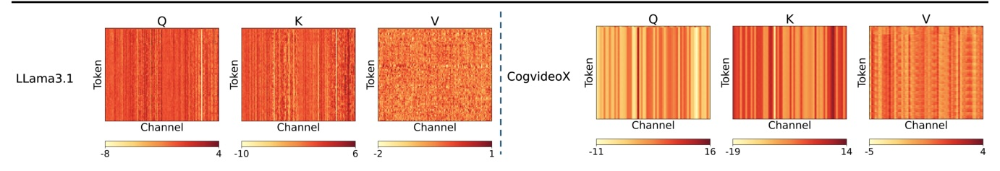
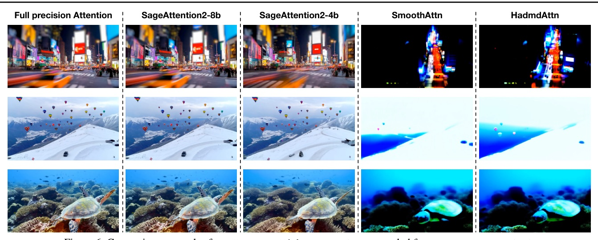

用 Q/K INT4 + P-tilde/V FP8，讓 attention kernel 變快，但不把模型品質一起量化掉。
2026-09-17 backfill: same-day candidate PDF returned HTTP 404; this deck uses an accessible peer-reviewed ICML paper instead.
真正的難點不是把 attention 壓到 4-bit；而是讓 quantization granularity、tensor-core layout、accumulator 同時對齊。

CogVideoX layerwise cosine similarity：80.04%（無 smoothing）→ 99.46%（smooth Q+K）
| Method | CosSim | Relative L1 | RMSE |
|---|---|---|---|
| Per-token | 99.45% | 0.0649 | 0.0335 |
| Per-thread | 99.45% | 0.0622 | 0.0313 |
| Per-block | 98.03% | 0.1492 | 0.0744 |
| Per-tensor | 97.15% | 0.1800 | 0.0865 |
| Kernel | vs FlashAttention2 | vs xformers | Hardware |
|---|---|---|---|
| SageAttn2-4b | ~3x | ~4.5x | RTX4090 |
| SageAttn2-8b | ~2.7x | ~4x | RTX4090 |
| SageAttn2-8b | matches FA3-fp8 | higher reported accuracy | Hopper |
| Workload | Original | SageAttn2-8b | SageAttn2-4b |
|---|---|---|---|
| CogVideoX 1.5-5B / RTX4090 | 1040 s | 577 s | 555 s |
| Llama3.1 48K / RTX4090 | 9.2 s | 5.7 s | 5.6 s |
| Llama3.1 100K / L20 | 39.9 s | 25.4 s | 23.2 s |
| Mochi / L20 | 2336 s | 1316 s | 1190 s |
| CogVideoX 1.5-5B | CLIPSIM | VQA-t | FScore |
|---|---|---|---|
| Full precision | 0.1778 | 70.928 | 2.507 |
| FlashAttn3-fp8 | 0.1562 | 2.181 | cannot evaluate |
| SageAttn2-4b | 0.1721 | 52.989 | 2.884 |
| SageAttn2-8b | 0.1775 | 74.415 | 2.487 |

| Technique | Kernel-speed overhead | Why it exists |
|---|---|---|
| Per-thread quantization | 0.35% | near per-token accuracy |
| Smooth Q | 3.7% | remove INT4 outlier damage |
| Two-level accumulation | 0% | contain FP22 accumulation error |
“This approach achieves much better accuracy performance than per-block quantization with no additional dequantization overhead.”
它比 per-block quantization 準得多，卻不增加 dequantization overhead；把 group 對準 thread layout 才是原因。§1 p.2
“We find that the accumulator for the mma(f32f8f8f32) instruction on the Ada and Hopper architecture is actually FP22.”
名稱看起來像 FP32 的 MMA accumulator，實際有效精度是 FP22；所以跨 block 需要 FP32 buffer。§3.4 p.6
低 bit-width attention 的勝負，在於誤差補償有沒有長在硬體真正執行的位置。